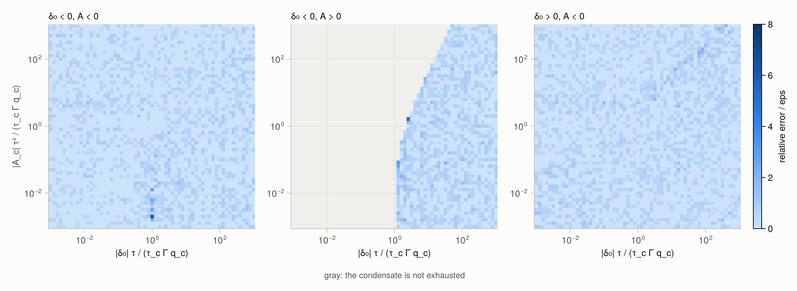

Validation
Reference solutions
The test suite solves the parcel model a second time with an independent integrator, test/reference/parcel_ode.jl: Radau IIA of order 5 with a simplified Newton iteration on a central-difference Jacobian, step-size control by step doubling, and events located by bisection on the step map. It has two models.
- Frozen-linear: the state $(\delta, q_l, q_i)$ under the coefficients of the problem at the start of the step. This is the problem
MM2015FixedTsolves exactly andMM2015PiecewiseLinearapproximates. - Nonlinear: the parcel model in the state $(q_l, q_i, T)$, with the saturation humidities, latent heats, heat capacity, and density following the state. This is the problem
MM2015solves.
The reference shares with the package only its thermodynamic functions; the frozen-linear model also takes the coefficients. Depletion times are checked against roots computed in 256- and 512-bit arithmetic.
What the tests check
MM2015FixedTagainst the frozen-linear reference: mean rates within $10^{-10}$ of the larger rate ($10^{-12}$ measured on most states), and the same events at times within $10^{-10}$ relative.MM2015against the nonlinear reference at a relative tolerance of $10^{-10}$: mean rates within ten times the tolerance, the same events at times within $10^{-7}$ relative, and the supersaturations at the end of the step; in both moisture bases, with both thermodynamics backends, and inFloat32within ten times its default tolerance.- The
exprb43step at order 4 with fixed steps; the analytic Jacobian against finite differences; the $\varphi$-functions against 512-bit values, within 8 times their componentwise condition number plus $\varepsilon$. - Depletion times over randomized inputs and near-tangent roots: within $10^{-13}$ relative, or, where the root is ill-conditioned, with a residual within $64\varepsilon$ of the size of the terms (the largest measured error is $3.1\varepsilon$); and the Lambert $W$ functions at their piece boundaries.
Coefficientsbuilt from host thermodynamics throughThermodynamicInputsequal those of the backend on every test state, in both moisture bases. InFloat32, the ice rate from a small $\delta_i$ given with the coefficients stays within $64\varepsilon$ of a 256-bit value.Thresholds: condensate belowx_minreturns to the vapor without an exhaustion event, and supersaturations belowδ_minandδ_i_minare set to zero. A parcel without condensate that stays subsaturated has zero rates in a single segment.- Invariants on every test state and scheme: no phase loses more mass than it holds, a phase without mass never loses mass, and ice does not grow above the triple point in a step that does not cross it.
- Zero allocations and inferred return types for every scheme, moisture basis, floating-point type, and backend.
Dependence on the step
The Gallery shows the change over one step of each scheme and of the reference for steps from 1 s to an hour, in five regimes and under three forcings, with the difference of each scheme from the reference.
Accuracy

Left: relative error of the mean rates against the reference for the state between ice and liquid saturation of the Gallery, for steps from 1 s to an hour. MM2015 stays between $2\times10^{-11}$ and $6\times10^{-10}$, MM2015FixedT between $1.1\times10^{-4}$ and $1.1\times10^{-3}$, and MM2015PiecewiseLinear between $9.6\times10^{-4}$ and 0.28. Right: the error of MM2015 against its relative tolerance for three of the Gallery states, each over the step of its evolution figure, with the line where the error equals the tolerance.
Depletion times

Relative error of the exhaustion time of MM2015FixedT, in units of $\varepsilon$, against 256-bit roots, over the initial supersaturation $\delta_0$ and forcing $A_c$ in units of the condensate. Gray marks where the condensate is not exhausted. The largest error on the grid is below $8\varepsilon$.
Test states
| Name | $T$ [K] | $p$ [hPa] | humidity | $q_l$, $q_i$ [g kg⁻¹] | $\tau_l$, $\tau_i$ [s] | forcing | $\Delta t$ [s] |
|---|---|---|---|---|---|---|---|
warm_updraft | 285 | 900 | $r_v/r_{sl}$ = 1.001 | 0.2, 0 | 5, 1000 | w = 1 m s⁻¹ | 60 |
warm_evaporation | 290 | 950 | $r_v/r_{sl}$ = 0.9 | 0.01, 0 | 10, 1000 | — | 120 |
wbf | 261 | 800 | $r_v/r_{sl}$ = 0.995 | 0.2, 0.1 | 8, 60 | w = 0.5 m s⁻¹ | 300 |
ice_subliming_liquid_growing | 275 | 850 | $r_v/r_{sl}$ = 1.0005 | 0.1, 0.05 | 10, 20 | — | 120 |
ice_only_supersaturated | 225 | 250 | $r_v/r_{si}$ = 1.2 | 0, 0.01 | 1000, 600 | w = 0.2 m s⁻¹ | 600 |
activation_moistening | 280 | 900 | $r_v/r_{sl}$ = 0.999 | 0, 0 | 5, 1000 | $\dot q_v$ = 2 mg kg⁻¹ s⁻¹ | 30 |
activation_ascent | 280 | 900 | $r_v/r_{sl}$ = 0.999 | 0, 0 | 5, 1000 | w = 1 m s⁻¹ | 30 |
activation_cooling | 280 | 900 | $r_v/r_{sl}$ = 0.999 | 0, 0 | 5, 1000 | $\dot T$ = −1 mK s⁻¹ | 30 |
freezing_level | 273.4 | 700 | $r_v/r_{sl}$ = 1 | 0.1, 0.01 | 10, 100 | $\dot T$ = −2 mK s⁻¹ | 300 |
stiff | 280 | 900 | $r_v/r_{sl}$ = 1.002 | 0.5, 0 | 0.1, 1000 | w = 2 m s⁻¹ | 60 |
sluggish | 280 | 900 | $r_v/r_{sl}$ = 1.01 | 0.001, 0 | 10⁴, 10⁴ | — | 10 |
dual_depletion | 265 | 800 | $r_v/r_{sl}$ = 0.8 | 0.001, 0.001 | 5, 20 | — | 120 |
band | 261 | 800 | $\delta$ = −10⁻⁷ | 0, 0.1 | 10, 50 | ascent in the band | 60 |
massless_ice_wbf | 261.81 | 800 | halfway between saturations | 0.002, 0 | 10, 80 | — | 10 |
ice_subliming_above_freezing | 276.77 | 900 | $r_v/r_{sl}$ = 0.98 | 0, 0.7 | 6000, 4 | — | 10 |
float_scale_near_freeze | 269.4 | 882.68 | $\delta$ = −1.6·10⁻⁵ | 10⁻⁷, 4·10⁻⁸ | 80, 5·10⁵ | $\dot T$, $\dot q_v$ | 10 |
float_scale_dual_depletion | 270.2 | 882.68 | $\delta_i$ = −2.4·10⁻⁵ | 10⁻⁷, 10⁻⁷ | 80, 5·10⁵ | $\dot T$, $\dot q_v$ | 10 |
Humidities are ratios of the vapor mixing ratio to the saturation mixing ratio over liquid ($r_{sl}$) or ice ($r_{si}$), or supersaturations in kg kg⁻¹. band rises at the speed that places it in a narrow band of ascent in which the ice holds the air just below liquid saturation, so no liquid forms. The two float_scale states warm at 0.28 mK s⁻¹ and moisten at 3.6 mg kg⁻¹ s⁻¹.